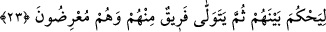

yolda Allah’dan başkasından korkma! Çünkü sana düşen ancak tebliğdir; yani Allah’ın
emrini insanlara ulaştırmaktır.
Her ne kadar dinlemeyeceklerini bilsen de söyle,
Nasihat ve öğüt adına ne kadar bildiğin varsa!
O seni dinlemeyen ve boş işlerle uğraşanları görürsün ki
İki ayağıyla bağın (tuzağın) içine düşmüş;
Hayıflanarak ellerini birbirine vururlar ve
Ben bilginlerin sözlerini niye işitmedim, derler.
Emr bi’l-mârûf, nehy ani’l-münker; yani iyiliği emir, kötülüğü yasaklama vazifesi
hiçbir zaman sâkıt olmaz. Müslümanlar bu vazifeden aslâ kurtulmazlar. Ancak âhir
zamanda kalplerin katılaşması, nefislerin de dünya lezzetleri peşinde yanıp tutuşması
sebebiyle öğüt ve îkaz tesir etmez olur.
Rivâyet olunduğuna göre bir yahûdî, Hârûn Reşîd’e, askeriyle seferde iken
“Allah’dan kork!” diye seslenmişti. Hârûn Reşîd yahûdînin bu sözünü işitince Allah’ın
yüce adını ta’zîm için atından indi, askerleri de indiler.
Bir insana kardeşi “Allah’dan kork” dediği zaman, onun; “Sen kendine karış! Sen kim
oluyorsun da bana bunu söyleyebiliyorsun?” demesi, günahların en büyüklerindendir.
Allah’dan dileriz ki bu öğütler kalbimize tesir eder de hepimizi doğru yola ulaştırır.
23. (Rasûlüm!) Kendilerine Kitap’tan bir pay verilenleri (yahûdîleri) görmez
misin ki, aralarında hükmetmesi için Allah’ın Kitâb’ına çağırılıyorlar da, sonra
içlerinden bir gurup cayarak geri dönüyor.
Âyetteki “görmedin mi?” ifadesi, Rasûl-i Ekrem (s.a.)’i yahud “ehl-i kitabın
hallerinin ortaya koyduğu manzarayı, onların kötü hallerini görenleri hayrete düşürmek
içindir, bakmadın mı?” demektir.
Onlar ki, kendilerine Kitâb’dan, yani Tevrat’tan büyükçe bir nasip verilmiştir. Bunlar
Tevrat’ın içindeki ilimler ve hükümlerdir. Peygamberimiz (s.a.)’in sıfatı ve İslâm’ın
hakikati da, bu ilimler cümlesindendir.
Bunlar kendi yaptıkları fiillerin, hareketlerin gerçeğinin ve mâhiyetinin ne olduğunu
anlasınlar diye, kitaplarının hakemliğini kabule çağrılmaktadırlar. Kitapta hükmün
beyânı olduğu için hüküm ona izâfe edilmiştir. Nitekim “Beşîr”, müjdeleyici; “Nezîr”,